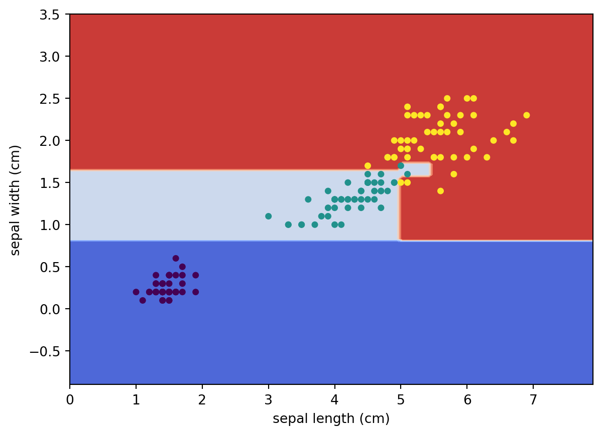
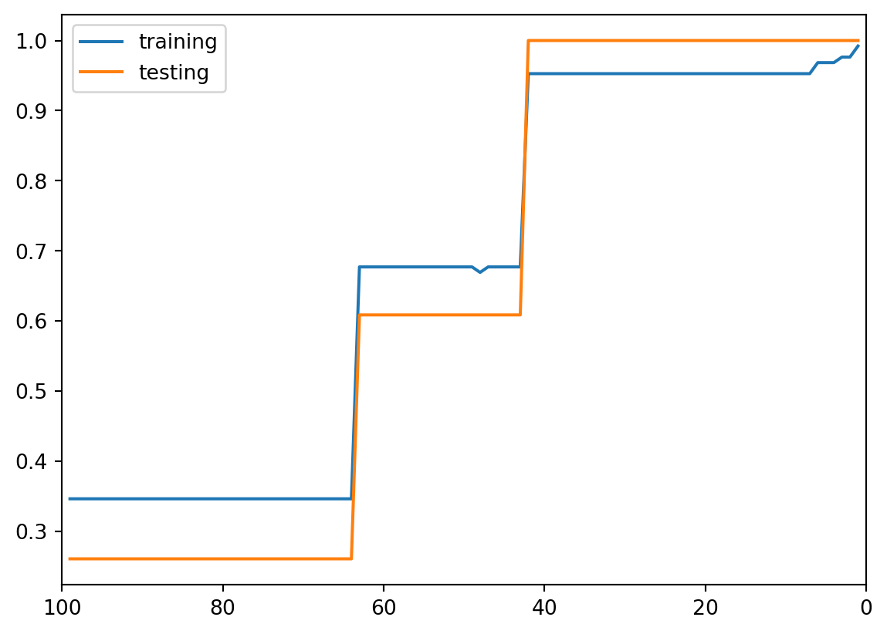

In earlier chapters we studied single decision trees. Trees are powerful because they automatically capture nonlinear relationships and interactions among variables. Unlike linear models, trees do not assume a global linear relationship between predictors and the response. Instead, they partition the predictor space into regions and make predictions within each region.
However, although trees are flexible, a single tree is often not very stable. Small changes in the data may produce a very different tree. In addition, shallow trees may underfit the data, while deep trees may overfit badly. As a result, a single tree is often not the best predictive model.
Ensemble methods improve prediction by combining many trees together. Instead of relying on one tree, ensemble methods aggregate information from multiple trees to produce a stronger model.
There are two major ensemble philosophies.
The first philosophy is averaging. Methods such as bagging and random forests build many trees independently and then average their predictions. The main goal is to reduce variance.
The second philosophy is boosting. Boosting builds trees sequentially. Each new tree is trained to improve the errors made by earlier trees. The main goal is to reduce bias by gradually improving the model.
11.2 1. Basic idea
An ensemble method combines many relatively simple models into one stronger model.
A general ensemble has the form \[
F_T(x)=\sum_{t=1}^T \alpha_t f_t(x),
\] where
\(f_t(x)\) is the \(t\)-th base learner,
\(\alpha_t\) is its weight,
\(T\) is the number of learners.
For tree-based ensembles, each \(f_t\) is usually a decision tree.
The main motivation is that a single tree is often unstable. A small change in the data can lead to a different tree. Ensemble methods reduce this instability by combining many trees.
NoteMain idea
A single tree is easy to interpret but has high variance.
An ensemble sacrifices some interpretability to improve prediction.
11.3 2. Two main strategies
There are two major ways to build tree ensembles.
Method
How trees are built
Main effect
Bagging
independently and in parallel
reduce variance
Random forest
bagging + random feature selection
reduce variance and decorrelate trees
Boosting
sequentially, each tree corrects previous errors
reduce bias, often also variance
The key distinction is whether the trees are built independently or sequentially.
11.4 3. Bagging
Bagging means bootstrap aggregating.
The algorithm is:
Draw \(B\) bootstrap samples from the training data.
Fit one tree to each bootstrap sample.
Average the predictions for regression.
For regression, \[
\hat f_{\text{bag}}(x)
=
\frac{1}{B}\sum_{b=1}^B \hat f_b(x).
\]
For classification, we usually use majority vote.
11.4.1 Why bagging works
Bagging mainly reduces variance.
If \(\hat f_1(x),\ldots,\hat f_B(x)\) are noisy but approximately unbiased estimators, then averaging them stabilizes the prediction.
If the base learners were independent and each had variance \(\sigma^2\), then \[
\operatorname{Var}\left(
\frac{1}{B}\sum_{b=1}^B \hat f_b(x)
\right)
=
\frac{\sigma^2}{B}.
\]
In practice, trees are not independent. If the correlation between tree predictions is \(\rho\), then approximately \[
\operatorname{Var}\left(
\frac{1}{B}\sum_{b=1}^B \hat f_b(x)
\right)
=
\rho\sigma^2+\frac{1-\rho}{B}\sigma^2.
\]
As \(B\) becomes large, the second term goes to zero, but the first term remains. Therefore, reducing correlation between trees is important.
This is the motivation for random forests.
11.5 4. Random forests
A random forest improves bagging by adding randomness to the splitting process.
For each tree:
Draw a bootstrap sample.
Grow a large tree.
At each split, randomly select only \(m_{\text{try}}\) predictors.
Find the best split only among those selected predictors.
Do not prune the tree.
For regression, the final prediction is \[
\hat f_{\text{RF}}(x)
=
\frac{1}{B}\sum_{b=1}^B \hat f_b(x).
\]
11.5.1 Role of mtry
The parameter mtry controls how many variables are considered at each split.
Large mtry:
each tree is stronger
splits are more greedy
trees become more correlated
Small mtry:
trees are less correlated
individual trees may be weaker
may miss important variables at some splits
Thus mtry controls a bias-variance tradeoff.
11.5.2 Other tuning parameters
Important tuning parameters include:
n_estimators: number of trees
max_features: number of predictors considered at each split
max_samples: sample size for each bootstrap sample
min_samples_leaf: minimum leaf size
max_depth: maximum depth of each tree
For random forests, trees are usually grown deep. The ensemble controls variance by averaging, rather than by pruning each tree.
11.6 5. Random forest as adaptive local averaging
A random forest can also be viewed as an adaptive kernel estimator.
For one tree, two points are close if they fall in the same terminal node.
Let \(K_{\mathcal T_b}(x,x_i)\) indicate whether \(x\) and \(x_i\) fall in the same leaf of tree \(b\).
Then a random forest induces a similarity measure: \[
K_{\text{RF}}(x,x_i)
=
\sum_{b=1}^B K_{\mathcal T_b}(x,x_i).
\]
This counts how many trees place \(x\) and \(x_i\) in the same terminal node.
Thus, a random forest prediction can be viewed as a weighted average: \[
\hat f_{\text{RF}}(x)
=
\sum_{i=1}^n w_i(x)y_i,
\] where observations that often share leaves with \(x\) receive larger weights.
NoteAdaptive neighborhood
KNN defines neighborhoods by Euclidean distance.
A random forest defines neighborhoods by tree leaves.
Therefore, the neighborhood is learned from the response and can adapt to important variables.
11.7 6. Variable importance
Random forests provide measures of variable importance.
Two common ideas are:
Impurity-based importance
Measures how much a variable reduces node impurity or RSS across the forest.
Permutation importance
Randomly permute one variable and measure how much prediction performance decreases.
Permutation importance is often easier to interpret:
if permuting \(x_j\) greatly worsens prediction, then \(x_j\) is important;
if performance barely changes, then \(x_j\) may not be useful.
CautionCaution
Impurity-based importance can be biased toward variables with many possible split points.
Permutation importance is usually more directly connected to predictive performance.
11.8 7. Extra-trees
Extremely randomized trees, or extra-trees, add even more randomness.
Compared with random forests:
random forest chooses the best split among random features;
extra-trees often choose split thresholds more randomly.
This usually increases bias but can reduce variance and speed up computation.
11.9 8. Boosting
Boosting builds an additive model sequentially: \[
F_T(x)=\sum_{t=1}^T \alpha_t f_t(x).
\]
Unlike random forests, the models are not built independently. Each new learner is chosen to improve the current ensemble.
The general idea is:
Start with a simple model \(F_0(x)\).
Find what the current model is doing wrong.
Fit a weak learner to correct those errors.
Add it to the model with a small step size.
Repeat.
For tree boosting, each \(f_t(x)\) is usually a small regression tree.
11.10 9. Gradient boosting for regression
For squared error loss, \[
L(y,F(x))=(y-F(x))^2.
\]
The derivative with respect to \(F(x)\) is \[
\frac{\partial L(y,F(x))}{\partial F(x)}
=
-2(y-F(x)).
\]
Therefore, the negative gradient is proportional to the residual: \[
r_i
=
y_i-F_{t-1}(x_i).
\]
The gradient boosting algorithm for regression is:
Initialize \[
F_0(x)=\bar y.
\]
For \(t=1,\ldots,T\):
Fit a regression tree \(h_t(x)\) to the residuals \[
r_i^{(t)}=y_i-F_{t-1}(x_i).
\]
Update \[
F_t(x)=F_{t-1}(x)+\eta h_t(x).
\]
Here \(\eta\) is the learning rate, also called shrinkage.
NoteKey point
For squared-error regression, gradient boosting fits trees to residuals.
More generally, it fits trees to negative gradients of the loss function.
11.11 10. Learning rate and number of trees
The learning rate \(\eta\) controls how much each tree contributes.
Small \(\eta\):
slower learning
usually needs more trees
often better generalization
Large \(\eta\):
faster learning
higher risk of overfitting
The number of trees \(T\) is also a tuning parameter.
The pair \((\eta,T)\) must be considered together.
A common practical strategy is:
use a small learning rate;
tune the number of trees by validation or cross-validation.
11.12 11. Tree depth in boosting
In boosting, each tree is often shallow.
depth 1: decision stump, captures main effects
depth 2 or 3: captures simple interactions
larger depth: more complex interactions
Unlike random forests, boosting does not need each tree to be strong. It builds strength by adding many weak learners sequentially.
11.13 12. Stochastic gradient boosting
Many implementations also use subsampling.
At each iteration, fit the next tree using only a random subset of observations.
This adds randomness and can improve generalization.
Important parameters include:
subsample
learning_rate
n_estimators
max_depth
min_samples_leaf
11.14 13. AdaBoost
AdaBoost is a classical boosting method for binary classification.
Here the response is coded as \[
y_i\in\{-1,+1\}.
\]
AdaBoost builds \[
F_T(x)=\sum_{t=1}^T \alpha_t f_t(x),
\] and classifies by \[
\operatorname{sign}(F_T(x)).
\]
A decision tree is a nonparametric method. Instead of assuming a global linear form such as \[
f(x)=\beta_0+\beta_1x_1+\cdots+\beta_px_p,
\] a tree learns a collection of simple if-then rules from the data. A very typical example is shown below.
This is a classficiation tree. In this example there are 3 classes, and we just check the feature x[1]. The first time if x[1]<=0.8, the data will be classified as orange. If not, the tree will check x[1] again and compare it with 1.75. If this time it is <=1.75, the data is classified as green, otherwise purple.
In general, a tree learns a collection of simple if-then rules from the data. A tree is called “adaptive” because the regions are learned from the data. If a predictor is useful, the tree may split on it many times. If a predictor is not useful, the tree may ignore it.
There are many algorithms for constructing decision trees. In this chapter, we focus on Classification and Regression Trees (usually called CART).
NoteAlgorithm: Split the Dataset
Inputs Given a dataset \(S=\{[features, target]\}\).
Outputs A best split \((k, t_k)\).
For each feature \(k\):
For each value \(t\) of the feature:
Split the dataset \(S\) into two subsets, one with \(k\leq t\) and one with \(k>t\).
Compute the cost function \(J(k,t)\).
Compare it with the current smallest cost. If this split has smaller cost, replace the current smallest cost and pair with \((k, t)\).
Return the pair \((k,t_k)\) that has the smallest cost function.
We then use this split algorithm recursively to get the decision tree.
NoteClassification and Regression Tree, CART
Inputs Given a labeled dataset \(S=\{[features, label]\}\) and a maximal depth max_depth.
Outputs A decision tree.
Starting from the original dataset \(S\). Set the working dataset \(G=S\).
Consider a dataset \(G\). If the cost function \(J(G)\neq0\), split \(G\) into \(G_l\) and \(G_r\) to minimize the cost function. Record the split pair \((k, t_k)\).
Now set the working dataset \(G=G_l\) and \(G=G_r\) respectively, and apply the above two steps to each of them.
Repeat the above steps, until max_depth is reached, or each subset is pure that is impossible to split further.
CART has the following features:
It creates only binary splits.
For classification, common splitting criteria include Gini impurity and entropy.
For regression, common splitting criteria include mean squared error or sum of squared errors.
12.1 Classification Tree
12.1.1 Gini impurity
To split a dataset, we need a metric to tell whether the split is good or not. The two most popular metrics that are used are Gini impurity and Entropy. The two metrics don’t have essential differences, that the results obtained by applying each metric are very similar to each other. Therefore we will only focus on Gini impurity since it is slightly easier to compute and slightly easier to explain.
Assume that we have a dataset of totally \(n\) objects, and these objects are divided into \(k\) classes. The \(i\)-th class has \(n_i\) objects. Then if we randomly pick an object, the probability to get an object belonging to the \(i\)-th class is
\[
p_i=\frac{n_i}{n}
\]
If we then guess the class of the object purely based on the distribution of each class, the probability that our guess is incorrect is
\[
1-p_i = 1-\frac{n_i}{n}.
\]
Therefore, if we randomly pick an object that belongs to the \(i\)-th class and randomly guess its class purely based on the distribution but our guess is wrong, the probability that such a thing happens is
\[
p_i(1-p_i).
\]
Consider all classes. The probability at which any object of the dataset will be mislabelled when it is randomly labeled is the sum of the probability described above:
This is the definition formula for the Gini impurity.
Definition 12.1 The Gini impurity is calculated using the following formula
\[
Gini = \sum_{i=1}^kp_i(1-p_i)=\sum_{i=1}^kp_i-\sum_{i=1}^kp_i^2=1-\sum_{i=1}^kp_i^2,
\] where \(p_i\) is the probability of class \(i\).
The way to understand Gini impurity is to consider some extreme examples.
Example 12.2 Assume that we only have one class. Therefore \(k=1\), and \(p_1=1\). Then the Gini impurity is
\[
Gini = 1-1^2=0.
\] This is the minimum possible Gini impurity. It means that the dataset is pure: all the objects contained are of one unique class. In this case, we won’t make any mistakes if we randomly guess the label.
Example 12.3 Assume that we have two classes. Therefore \(k=2\). Consider the distribution \(p_1\) and \(p_2\). We know that \(p_1+p_2=1\). Therefore \(p_2=1-p_1\). Then the Gini impurity is
\[
Gini(p_1) = 1-p_1^2-p_2^2=1-p_1^2-(1-p_1)^2=2p_1-2p_1^2.
\] When \(0\leq p_1\leq 1\), this function \(Gini(p_1)\) is between \(0\) and \(0.5\). - It gets \(0\) when \(p_1=0\) or \(1\). In these two cases, the dataset is still a one-class set since the size of one class is \(0\). - It gets \(0.5\) when \(p_1=0.5\). This means that the Gini impurity is maximized when the size of different classes are balanced.
TipEntropy
Other than Gini impurity, entropy is also a popular choice for classification tree. However its performance is very similar to the Gini impurity while the formula for entropy is a little bit more complicated, therefore we only discuss the Gini impurity in this notes.
Suppose the tree divides the feature space into \(M\) terminal regions: \[
R_1,R_2,\ldots,R_M.
\]
These regions are also called leaves or terminal nodes.
For a new observation \(x\), the fitted regression tree has the form \[
\hat f(x)=\sum_{m=1}^M c_m I(x\in R_m),
\] where \(c_m\) is the prediction assigned to region \(R_m\).
For squared error loss, the best constant in each region is the sample mean: \[
\hat c_m
=
\frac{1}{N_m}
\sum_{x_i\in R_m}y_i,
\] where \(N_m\) is the number of training observations in region \(R_m\).
This is a piecewise constant approximation to the regression function \(f(x)=E(Y\mid X=x)\).
Inside a leaf, every point receives the same prediction. Across a split boundary, the prediction can jump.
12.2 3. A single split
At a node \(\mathcal A\), a binary split is determined by:
a variable index \(j\)
a cutoff value \(c\)
The split creates two child nodes: \[
\mathcal A_L(j,c)=\{x\in \mathcal A: x_j\le c\},
\] and \[
\mathcal A_R(j,c)=\{x\in \mathcal A: x_j>c\}.
\]
For regression, a good split makes the responses inside each child node more homogeneous.
One way to write the split criterion is the weighted post-split variance: \[
\frac{N_L}{N_{\mathcal A}}\operatorname{Var}(\mathcal A_L)
+
\frac{N_R}{N_{\mathcal A}}\operatorname{Var}(\mathcal A_R).
\]
We want this quantity to be small.
Equivalently, we maximize the variance reduction: \[
\operatorname{score}(j,c)
=
\operatorname{Var}(\mathcal A)
-
\left[
\frac{N_L}{N_{\mathcal A}}\operatorname{Var}(\mathcal A_L)
+
\frac{N_R}{N_{\mathcal A}}\operatorname{Var}(\mathcal A_R)
\right].
\]
The best split is \[
(\hat j,\hat c)
=
\arg\max_{j,c}\operatorname{score}(j,c).
\]
The same idea can be written using residual sum of squares: \[
\sum_{x_i\in \mathcal A_L}(y_i-\bar y_L)^2
+
\sum_{x_i\in \mathcal A_R}(y_i-\bar y_R)^2.
\]
The split with the smallest post-split RSS is chosen.
12.3 4. Recursive binary splitting
A regression tree is built greedily.
At each node:
Try each predictor \(x_j\).
Try candidate cutoffs \(c\).
Compute the split criterion.
Choose the split with the largest reduction in RSS.
Repeat the same procedure on the two child nodes.
This is called recursive binary splitting.
The procedure is greedy because the best split is chosen locally at each step. The algorithm does not search over all possible trees globally.
This matters because an early split affects all later splits below it. A split that looks best now may not be part of the globally best tree.
Still, recursive binary splitting is fast, simple, and usually effective.
12.4 5. Candidate cutoffs
For a continuous predictor \(x_j\), candidate cutoffs are usually chosen between sorted observed values.
If the unique observed values of \(x_j\) are \[
v_1<v_2<\cdots<v_K,
\] then possible cutoffs can be taken as midpoints: \[
c_k=\frac{v_k+v_{k+1}}{2},
\qquad k=1,\ldots,K-1.
\]
For each candidate cutoff, the data in the current node are divided into a left group and a right group.
For categorical predictors, a split divides the categories into two groups. In practice, software handles this differently depending on the implementation. Some implementations require one-hot encoding first.
NotePractical detail
Trees do not require variables to be on the same scale.
A split only compares one variable to one cutoff, so standardization is usually not needed for ordinary tree models.
This expression shows that a regression tree is a local averaging estimator.
The neighborhood of \(x_0\) is not a ball or a nearest-neighbor set. It is the leaf containing \(x_0\).
12.6 7. Adaptive kernel view
KNN also predicts by local averaging, but its neighborhood is usually determined by distance.
A tree also predicts by averaging nearby training responses, but the neighborhood is defined by the learned terminal node.
Let \(R(x_0)\) be the terminal node containing \(x_0\).
For a point \(x_0\), the tree gives positive weight only to observations that fall in the same terminal node: \[
w_i(x_0)
=
\frac{I(x_i\in R(x_0))}
{\sum_{l=1}^n I(x_l\in R(x_0))}.
\]
Then \[
\hat f(x_0)=\sum_{i=1}^n w_i(x_0)y_i.
\]
The important difference is that the tree neighborhood is adaptive.
If only \(x_1\) is important, the tree may split mostly on \(x_1\) and ignore irrelevant directions. This helps trees avoid some problems of ordinary distance-based local methods.
NoteKey idea
KNN uses a fixed notion of distance.
A tree learns the neighborhood from the data.
12.7 8. Geometry
A regression tree partitions the feature space into axis-aligned rectangles.
For example, in two dimensions, a split such as \[
x_1\le c
\] creates a vertical boundary, and a split such as \[
x_2\le c
\] creates a horizontal boundary.
After several splits, the feature space becomes a collection of rectangles.
Inside each rectangle, the fitted value is constant: \[
\hat f(x)=\bar y_R.
\]
Therefore, trees can model nonlinear patterns and interactions, but the fitted function is not smooth.
The function is flat inside each region and jumps across split boundaries.
This is why a single tree often looks rough.
12.8 9. Interactions
Trees handle interactions naturally.
An interaction means the effect of one variable depends on the value of another variable.
For example, suppose the tree first splits on \(x_1\): \[
x_1\le c_1.
\]
Then, inside the left branch, the tree may split on \(x_2\): \[
x_2\le c_2.
\]
This means the role of \(x_2\) is different depending on whether \(x_1\le c_1\) or \(x_1>c_1\).
No explicit interaction term such as \(x_1x_2\) needs to be added.
This is one reason trees are useful exploratory models.
12.9 CART Algorithms
12.9.1 Ideas
Consider a labeled dataset \(S\) with totally \(m\) elements. We use a feature \(k\) and a threshold \(t_k\) to split it into two subsets: \(S_l\) with \(m_l\) elements and \(S_r\) with \(m_r\) elements. Then the cost function of this split is
\[
J(k, t_k)=\frac{m_l}mGini(S_l)+\frac{m_r}{m}Gini(S_r).
\] It is not hard to see that the more pure the two subsets are the lower the cost function is. Therefore our goal is find a split that can minimize the cost function.
12.10 Decision Tree Project 1: the iris dataset
We are going to use the Decision Tree model to study the iris dataset. This dataset has already studied previously using k-NN. Again we will only use the first two features for visualization purpose.
12.10.1 Initial setup
Since the dataset will be splitted, we will put X and y together as a single variable S. In this case when we split the dataset by selecting rows, the features and the labels are still paired correctly.
We also print the labels and the feature names for our convenience.
from sklearn.datasets import load_irisimport numpy as npiris = load_iris()X = iris.data[:, 2:]y = iris.targety = y.reshape((y.shape[0],1))S = np.concatenate([X,y], axis=1)print(iris.target_names)print(iris.feature_names)
Now we would like to use the decision tree package provided by sklearn. The process is straightforward. The parameter random_state=40 will be discussed {ref}later<note-random_state>, and it is not necessary in most cases.
from sklearn.tree import DecisionTreeClassifierclf = DecisionTreeClassifier(random_state=40, min_samples_split=2)clf.fit(X, y)
DecisionTreeClassifier(random_state=40)
In a Jupyter environment, please rerun this cell to show the HTML representation or trust the notebook. On GitHub, the HTML representation is unable to render, please try loading this page with nbviewer.org.
Parameters
criterion
'gini'
splitter
'best'
max_depth
None
min_samples_split
2
min_samples_leaf
1
min_weight_fraction_leaf
0.0
max_features
None
random_state
40
max_leaf_nodes
None
min_impurity_decrease
0.0
class_weight
None
ccp_alpha
0.0
monotonic_cst
None
sklearn provide a way to automatically generate the tree view of the decision tree. The code is as follows.
Similar to k-NN, we may use sklearn.inspection.DecisionBoundaryDisplay to visualize the decision boundary of this decision tree.
from sklearn.inspection import DecisionBoundaryDisplayDecisionBoundaryDisplay.from_estimator( clf, X, cmap='coolwarm', response_method="predict", xlabel=iris.feature_names[0], ylabel=iris.feature_names[1],)# Plot the training pointsplt.scatter(X[:, 0], X[:, 1], c=y, s=15)

12.10.3 Tuning hyperparameters
Building a decision tree is the same as splitting the training dataset. If we are alllowed to keep splitting it, it is possible to get to a case that each end node is pure: the Gini impurity is 0. This means two things:
The tree learns too many (unnecessary) detailed info from the training set which might not be applied to the test set. This is called overfitting. We should prevent a model from overfitting.
We could use the number of split to indicate the progress of the learning.
In other words, the finer the splits are, the further the learning is. We need to consider some early stop conditions to prevent the model from overfitting.
Some possible early stop conditions:
max_depth: The max depth of the tree. The default is none which means no limits.
min_samples_split: The minimum number of samples required to split an internal node. The default is 2 which means that we will split a node with as few as 2 elements if needed.
min_samples_leaf: The minimum number of samples required to be at a leaf node. The default is 1 which means that we will still split the node even if one subset only contains 1 element.
If we don’t set them (which means that we use the default setting), the dataset will be split untill all subsets are pure.
Example 12.4 (ALMOST all end nodes are pure) In this example, we let the tree grow as further as possible. It only stops when (almost) all end nodes are pure, even if the end nodes only contain ONE element (like #6 and #11).
All the data points in this node has the same feature while their labels are different. They cannot be split further purely based on features.
Therefore we could treat these hyperparameters as an indicator about how far the dataset is split. The further the dataset is split, the further the learning goes, the more details are learned. Since we don’t want the model to be overfitting, we don’t want to split the dataset that far. In this case, we could use the learning curve to help us make the decision.
In this example, let us choose min_samples_leaf as the indicator. When min_samples_leaf is big, the learning just starts. When min_samples_leaf=1, we reach the far most side of learning. We will see how the training and testing accuracy changes along the learning process.
from sklearn.model_selection import train_test_splitimport matplotlib.pyplot as pltX_train, X_test, y_train, y_test = train_test_split(X, y, test_size=0.15, random_state=42)num_leaf =list(range(1, 100))train_acc = []test_acc = []for i in num_leaf: clf = DecisionTreeClassifier(random_state=42, min_samples_leaf=i) clf.fit(X_train, y_train) train_acc.append(clf.score(X_train, y_train)) test_acc.append(clf.score(X_test, y_test))plt.plot(num_leaf, train_acc, label='training')plt.plot(num_leaf, test_acc, label='testing')plt.gca().set_xlim((max(num_leaf)+1, min(num_leaf)-1))plt.legend()

From this plot, the accuracy has a big jump at min_sample_leaf=41. So we could choose this to be our hyperparameter.
12.10.4 Pruning
Other than tuning hyperparameters, we also want to prune our tree in order to reduce overfitting further. The pruning algorithm introduced together with CART is called Minimal-Cost-Complexity Pruning (MCCP).
The idea is to use the cost-complexity measure to replace Gini impurity to grow the tree. The cost-complexity measure is gotten by adding the total number of end nodes with the coefficent ccp_alpha to the Gini impurity. The parameter ccp_alpha>=0 is known as the complexity parameter, and it can help the tree to self-balance the number of end nodes and the Gini impurity.
In sklearn, we use cost_complexity_pruning_path to help us find the effective alphas and the corresponding impurities.
The list ccp_alphas contains all important ccp_alphas. We could train a model for each of them. We could use the argument ccp_alpha to control the value when initialize the model. After we train all these tree models for each effective ccp_alpha, we evaluate the model and record the results.
clfs = []for ccp_alpha in ccp_alphas: clf = DecisionTreeClassifier(random_state=42, ccp_alpha=ccp_alpha) clf.fit(X_train, y_train) clfs.append(clf)node_counts = [clf.tree_.node_count for clf in clfs]depth = [clf.tree_.max_depth for clf in clfs]train_acc = [clf.score(X_train, y_train) for clf in clfs]test_acc = [clf.score(X_test, y_test) for clf in clfs]
are robust to monotone transformations of predictors
provide a natural basis for random forests and boosting
The biggest strength is interpretability.
A tree can often be explained as a sequence of simple rules.
13.3 16. Weaknesses
A single regression tree also has important limitations:
prediction is piecewise constant
fitted function is not smooth
small changes in data can change the tree
high variance
often weaker predictive performance than ensembles
poor extrapolation outside the training range
axis-aligned splits can be inefficient for diagonal patterns
Poor extrapolation is especially important.
If a test point has a predictor value outside the training range, a tree still predicts using the average of some training leaf. It does not continue a linear trend beyond the observed data.
CautionImportant
A single tree is usually better as an interpretable model or as a building block.
For prediction, ensembles of trees are usually much stronger.
The important point is that tuning should be done using validation data or cross-validation, not by choosing the tree with the smallest training error.
The pruning path gives a sequence of candidate values for ccp_alpha.
Cross-validation chooses which subtree gives the best prediction error.
13.6 19. Summary
A regression tree is an adaptive partitioning method.
Its fitted model is \[
\hat f(x)
=
\sum_{m=1}^M
\bar y_{R_m} I(x\in R_m).
\]
The algorithm chooses splits to reduce within-node variation, usually measured by RSS or variance.
The fitted function is piecewise constant.
The main tuning problem is controlling tree size.
A single tree is interpretable, flexible, and useful for discovering structure, but it is often unstable.
This motivates ensemble methods such as bagging, random forests, and boosting.
14 Linear Models, Trees, Bagging, Random Forests, and Boosting:
15 A Unified View Through Predictor Interactions
15.1 Introduction
One of the most important questions in statistical learning is:
How does a model combine predictors together?
Different learning methods differ mainly in how they represent and combine predictor effects.
Some methods assume predictors contribute independently and globally. Other methods automatically discover local interactions and hierarchical structures.
This perspective provides a very unified way to understand:
linear models
trees
bagging
random forests
boosting
The key idea is:
Different models differ in how they discover, combine, and refine predictor interactions.
This model assumes that predictor effects are additive.
Each predictor contributes independently:
\[
\beta_j x_j.
\]
The overall prediction is simply the sum of these effects.
Thus linear models have a very important structural assumption:
Predictor effects are global and additive.
For example, suppose the coefficient of income is positive. Then increasing income always increases the prediction by the same amount, regardless of age, region, education, or other variables.
This creates a very smooth and interpretable model.
However, the model cannot automatically discover interactions between predictors.
17 Interaction Terms in Linear Models
Suppose the effect of one predictor depends on another predictor.
For example:
income may matter differently for younger and older individuals
dosage effects may depend on body weight
advertising effects may depend on region
A linear model cannot automatically discover such interactions.
Instead, the interaction must be manually specified:
Thus interaction modeling in linear regression is explicit and manual.
The analyst must decide:
which interactions exist
which interaction terms to include
This becomes difficult when the number of predictors is large.
18 Trees
Decision trees approach interactions very differently.
A tree recursively partitions predictor space into regions.
For example:
if age > 40:
if income < 50000:
predict class A
A single branch already represents a predictor interaction structure.
This branch corresponds to:
\[
(\text{age}>40)
\cap
(\text{income}<50000).
\]
Thus a root-to-leaf path is essentially:
a hierarchical combination of predictor conditions.
This is one of the most important conceptual differences between trees and linear models.
Linear models require interaction terms to be specified manually.
Trees discover interactions automatically.
19 Trees as Interaction Hierarchies
A tree can be viewed as a hierarchy of interactions.
For example:
x1 > 3
↓
x2 < 5
↓
x7 > 10
This means:
the effect of \(x_2\) depends on the region defined by \(x_1\)
the effect of \(x_7\) depends on both \(x_1\) and \(x_2\)
Thus trees naturally model:
nonlinear effects
threshold effects
conditional relationships
local interactions
This makes trees extremely flexible.
20 Advantages of Trees
Because trees automatically discover interactions, they are very powerful for tabular data.
Trees are especially good at handling:
complicated predictor interactions
nonlinear relationships
heterogeneous variables
mixed data types
In addition, trees do not require:
feature scaling
manual interaction engineering
strict parametric assumptions
21 Limitations of Trees
Although trees are flexible, a single tree is often unstable.
Small changes in the data may produce very different splits.
As a result:
tree structures can vary substantially
prediction variance may be high
deep trees may overfit
Thus a single tree is often not the best predictive model.
This motivates ensemble methods.
22 Bagging
Bagging stands for bootstrap aggregation.
The main idea is simple:
Draw many bootstrap samples
Fit a large tree to each sample
Average the predictions
The key insight is that different bootstrap samples produce different trees.
Each tree may discover somewhat different interaction structures.
For example:
Tree A may discover:
income → age → balance
while Tree B may discover:
region → debt → income
and Tree C may discover:
education → age → loan history
Thus bagging averages over many interaction hierarchies.
23 Bagging as Interaction Averaging
From the interaction perspective, bagging can be viewed as:
averaging many unstable interaction structures.
This is extremely important.
A single tree may overreact to small fluctuations in the data.
Bagging stabilizes interaction discovery by averaging many trees together.
The averaging process reduces variance and improves stability.
Thus the primary goal of bagging is not to discover increasingly complicated interactions.
Instead, the goal is:
stabilize interaction discovery through averaging.
24 Random Forests
Random forests extend bagging.
A random forest still uses:
bootstrap sampling
many trees
averaging
However, random forests introduce an additional source of randomness.
At each split, the algorithm only considers a random subset of predictors.
For example:
max_features = sqrt(p)
This changes tree construction substantially.
25 Why Random Forests Improve Bagging
In ordinary bagging, strong predictors may dominate many trees.
For example, if predictor \(x_1\) is extremely important, then many trees will repeatedly split on \(x_1\) near the top.
As a result:
many trees become similar
interaction structures become correlated
averaging becomes less effective
Random forests reduce this problem.
Because each split only sees a subset of predictors, different trees are forced to explore different interaction structures.
Thus random forests encourage diversity among trees.
26 Random Forests as Decorrelated Interaction Averaging
From the interaction viewpoint:
bagging averages many interaction structures
random forests average many decorrelated interaction structures
This is the key conceptual improvement.
Random forests intentionally encourage trees to explore different predictor combinations.
This reduces tree correlation and further lowers variance.
27 Boosting
Boosting uses a completely different philosophy.
Bagging and random forests build trees independently and average them.
Boosting builds trees sequentially.
Each new tree attempts to improve the mistakes made by earlier trees.
Conceptually:
flowchart TD
A[Current Interaction Structure]
B[Identify Remaining Errors]
C[Fit New Local Interaction]
D[Refine Decision Boundary]
A --> B
B --> C
C --> D
D --> B